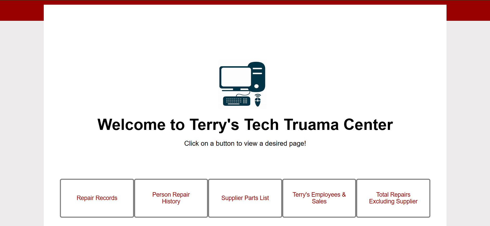

Terry's Tech
Description
A collaborative full-stack web application for a fictional tech repair company, built using PHP, MySQL, HTML, and CSS. This project focuses on data visualization and reporting, allowing users to analyze key business metrics such as sales by manufacturer, employee performance, and product trends.
Key features:
- Dynamic database queries to view sales and performance data from multiple angles
- Backend integration with MySQL for real-time data retrieval and filtering
- Clean, accessible interface built with HTML and CSS
- Backend logic handled with PHP for secure and efficient data handling
- Notetaker: Ensured organized documentation of meetings and decisions
- Facilitator: Helped guide discussions and maintain project momentum
- Researcher: Investigated technical solutions and best practices
- Communicator: Acted as a liaison between group members to maintain alignment
Link to the project: Terry's tech
Tools/Resources Used
- PHP
- MySQL
- Html
- CSS
Video Walkthrough
Pictures
...